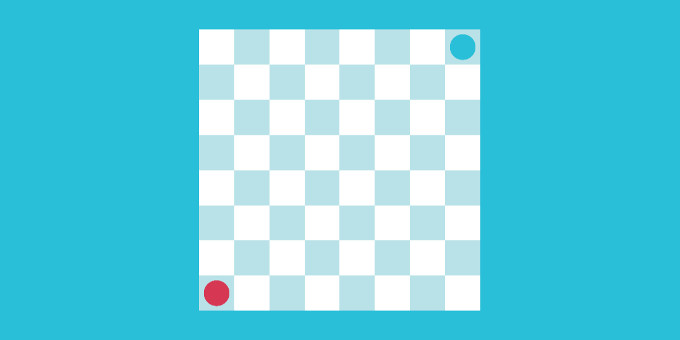

Moving a piece and changing turns

Set up a game board with pieces as explained here.
1. Add a rules script
Now, create a new script that will handle the logic for moving pieces and swapping turns. In our example:
- Each player will have one move.
- A player can move their piece to any open space on the board. (This is already configured by the
Any Open Spaceon the logical piece prefabs.) - In each turn, the player selects the piece to move, and then selects the square to move the piece to.
Here is how the script looks:
using UnityEngine;
using Gamelogic.AbstractStrategy.Grids;
using Gamelogic.Extensions;
using Gamelogic.Grids2;
namespace Gamelogic.AbstractStrategy.Samples
{
public class MovePieceAndSwapTurns : GLMonoBehaviour
{
private GridGameManager manager;
private Player<GridPoint2, GridGamePieceSettings> redPlayer, bluePlayer;
private IPieceProperties selectedPiece;
public void Start()
{
InitializeGameManager();
InitializePlayers();
manager.StartGame();
}
public void Update()
{
if (Input.GetKeyDown(KeyCode.Space))
{
manager.StartGame(); //Reset Game
}
}
public void OnClick(GridPoint2 point)
{
var currentPlayer = manager.CurrentPlayer;
if (!(currentPlayer is GridHumanPlayer) || !manager.MoveManager.Done)
{
return;
}
// If a block is occupied, try to select
var state = manager.State;
var piece = state.TestPosition(point);
if (piece != null)
{
if (piece.PlayerID == currentPlayer.PlayerID)
{
SelectPiece(piece);
}
}
else if (selectedPiece != null)
{
// Try to commit move
var selectedPos = state.FindPiece(selectedPiece);
var move = state.CreateMovePieceMove(selectedPiece, selectedPos, point);
if (manager.CommitMove(move))
{
DeselectPiece();
}
}
}
private void InitializeGameManager()
{
manager = GetComponent<GridGameManager>();
if (manager == null)
{
GLDebug.LogError("You must have a GridGameManager attached to the same gameManager object as this component");
}
}
private void InitializePlayers()
{
redPlayer = new GridHumanPlayer("red");
bluePlayer = new GridHumanPlayer("blue");
manager.RegisterPlayer(redPlayer);
manager.RegisterPlayer(bluePlayer);
}
private void DeselectPiece()
{
if (selectedPiece != null)
{
UpdateVisualSelectionState(false);
}
selectedPiece = null;
}
private void SelectPiece(IPieceProperties piece)
{
if (selectedPiece != null)
{
DeselectPiece();
}
selectedPiece = piece;
UpdateVisualSelectionState(true);
}
private void UpdateVisualSelectionState(bool selectionOn)
{
var visualPiece = manager.GetExistingVisualPiece(selectedPiece);
var sprite = visualPiece.GetComponentInChildren<SpriteRenderer>();
if (sprite != null)
{
var colour = sprite.color;
colour.a = selectionOn ? 0.8f : 1.0f;
sprite.color = colour;
}
}
}
}
The script needs to get a reference to the Grid Game Manager, and register the players and handle mouse input. The setup used for this example is typical of these types of games. We keep track of the currently selected piece. When the grid is clicked:
- If the currently selected piece is
null, and the click is over a piece of the player whose turn it is, we make that piece the selected piece. - If it is not
null, and we click on an empty square, the piece is moved there (and the turn ends automatically). - If it is not
null, and we click on a piece of the player whose turn it is, that piece becomes the new currently selected piece.
2. Add a SpriteCellGridEventTrigger to the grid
- Add
SpriteCellGridEventTriggerto the grid object. This allows the system to process mouse clicks. - Link the game camera.
- Add an event for OnMouseButton down, and link in the grid object to the event, and select the
OnClickmethod of your game rules script. (This isMovePieceAndSwapTurns.OnClickin our example.)